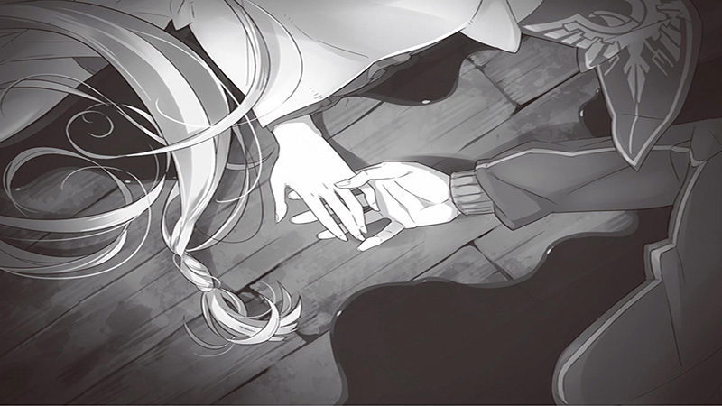

Twist
《Re_Down》
2016.8

Simplified plot editing, powered by Adobe After Effect and Adobe Premiere, based on
《Re：ゼロから始める異世界生活》
, edited by
@Twistzzz
.The illustration is originated from the 1st chapter of the novel.
Ae
Pr
View